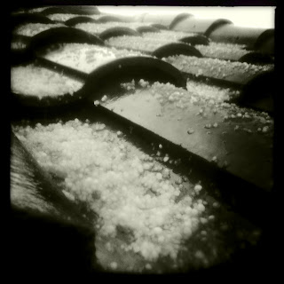

Recovered weblog entry
Hail, yes <\pun>

As forecasted, we received a dose of wet weather today. Once the hail started, I grabbed a zip-lock bag and headed outside. Unfortunately, it rained so hard that my lens immediately fogged and nothing would focus. This was the only reputable shot. The kids took a handful and chucked it out the door. I suppose that's an Arizona snowball. Lens: John S
Film: Claunch 72 Monochrome